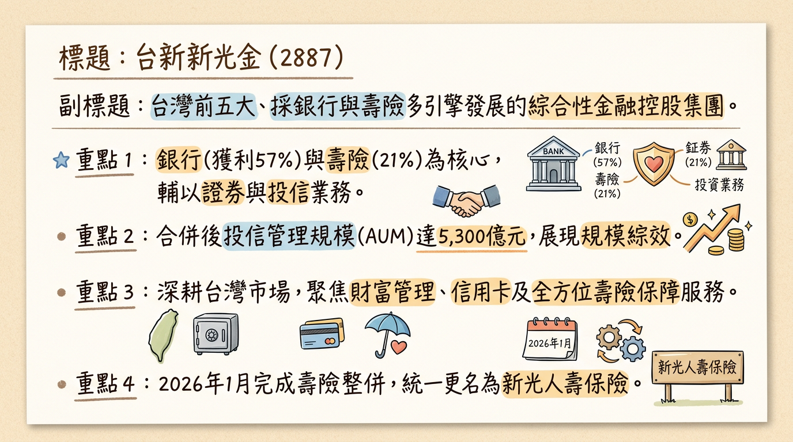

2887 台新新光金 深度研究報告
一句話摘要
台新新光金合併綜效進入「獲利爆發期」，2026 年 1 月單月 EPS 達 0.35 元，正式躍升台灣前四大金控並朝全球型金融集團邁進。公司概覽
台新新光金融控股（以下簡稱台新新光金）於 2024 年 7 月完成台新金與新光金之控股層級合併。目前正處於子公司深度整併期，具備銀行、壽險、證券三合一之「多引擎」動能。
業務結構與獲利貢獻（2025 年自結數據）
| 業務板塊 | 核心子公司 | 獲利貢獻比重 | 2025 稅後純益 (億元) | 關鍵優勢 |
|---|---|---|---|---|
| 銀行業務 | 台新銀行 / 新光銀行 | 57% | 213.9 | 數位銀行 Richart 領先、NIM 達 1.34% |
| 保險業務 | 新光人壽 (含台新人壽) | 21% | 約 78.5 | 合併後躍升全台前三大壽險、CSM 穩定釋放 |
| 證券業務 | 台新證券 / 元富證券 | 13% | 48.0 | 經紀市佔率達 5.13% (市場第 4 大) |
| 其他 | 投信、創投、海外 | 9% | 33.2 | 投信 AUM 達 5,300 億元 |
核心競爭優勢
財務分析
月營收趨勢表（受合併報表因素影響，YoY 呈現爆發性增長）
| 月份 | 營收金額 (億元) | 月增率 MoM | 年增率 YoY | 備註 |
|---|---|---|---|---|
| 2026/01 | 187.73 | -15.69% | +219.42% | 合併綜效顯現，壽險獲利挹注 |
| 2025/12 | 222.66 | +8.46% | +229.51% | 2025 年底結算高峰 |
| 2025/11 | 205.29 | +16.21% | +187.19% | 銀行利息手續費穩健成長 |
| 2025/10 | 176.70 | -10.19% | +168.66% | 市場波動影響自營收益 |
| 2025/09 | 239.50 | +52.46% | +236.79% | 單月一次性合併調整利益 |
| 2025/08 | 157.10 | +55.95% | +77.99% | 合併初期數據反映 |
季度與年度數據
- 2025 Q3 關鍵數據：營收累計 2,935.8 億元，毛利率 66.48%，營業利益率 29.36%，單季 EPS 0.59 元。
- 全年度 EPS 趨勢：
* 2025 (實際)：1.91 元 (創歷史新高)
* 2026 (預估)：根據 1 月單月 0.35 元估算，全年挑戰 2.1 - 2.5 元。
法說會重點
- 子公司整併時程：
* 證券：2026/04/06 將完成台新與元富證券合併，據點增至 55 處。
* 銀行：系統最為複雜，目標於 2026 年底 完成 IT 整併。
- 股利政策：管理層明確表示，2026 年發放之現金股利將「優於 2025 年的 0.9 元」，市場預期落點為 1.0 - 1.1 元。
- 資本支出：2026 年預計投入 30-50 億元 於銀行數位轉型與 IT 系統對齊。
券商觀點
註：部分早期報告尚未完全反映 2026 年初獲利爆發，目標價存在低估。| 券商名稱 | 報告日期 | 評等 | 目標價 | 2026 EPS 預估 |
|---|---|---|---|---|
| 凱基投顧 | 2025/12/03 | 持有 (保守) | 20.0 | 1.55 |
| 統一投顧 | 2025/12/03 | 中立 (保守) | 19.0 | 1.70 |
| Cmoney 社群專家 | 2026/02/15 | 買進 | 35.0 - 40.0 | 2.50 |
| FactSet 調查中位數 | 2025/05/18 | ⚠️過時 | 17.25 | -- |
財報深度分析
利潤率趨勢 (2025 季度)
| 指標 | 2025 Q1 | 2025 Q2 | 2025 Q3 | 2025 Q4 (自結) |
|---|---|---|---|---|
| 稅後淨利率 | 23.2% | 24.5% | 27.6% | 29.8% |
| 單季 EPS | 0.33 | 0.38 | 0.53 | 0.67 |
- 資產品質：2025 年底逾放比（NPL）僅 0.14%，備抵呆帳覆蓋率達 892.7%，體質極其優異。
- 資本適足率：壽險端 RBC 於 2025 年底已順利達標 200% 以上，緩解增資壓力。
股權異動
- 申報轉讓：近期無大規模大股東申報轉讓，籌碼面穩定。
- 庫藏股：目前無大規模執行庫藏股。
- 股本變化：因合併案發行新股，2025 年總股本膨脹約 90%，但因獲利成長幅度更大（2026/01 YoY +454%），EPS 稀釋壓力已被獲利成長抵銷。
- 外資動向：2026 年 1 月中旬外資連買 7 日達 16 萬張，目前持股比約 23.22%。
產業分析
台灣金控競爭格局 (2025 全年數據)
| 公司名稱 | 2025 獲利 (億元) | EPS (元) | 預估殖利率 | 關鍵動態 |
|---|---|---|---|---|
| 富邦金 (2881) | 1,208.5 | 8.36 | 4.84% | 獲利王 |
| 國泰金 (2882) | 1,079.9 | 7.08 | 5.43% | 資本韌性高 |
| 中信金 (2891) | 806.2 | 4.08 | 5.49% | 銀行獲利新高 |
| 台新新光金 (2887) | 373.6 | 1.91 | 5.20% | 獲利成長 86%，合併綜效爆發 |
近期催化劑
- 利多事件：
* 2026/05 股東會公布股利發放數字（預期驚喜）。
* 2026 下半年 申請設立美國分行。
- 利空/風險事件：
* 2026 接軌 IFRS 17 與 ICS 新制之資本需求挑戰。
⭐ 成長動能時間軸
- 2026/01/01：新光人壽完成合併，更名掛牌。
- 2026/02：單月 EPS 0.35 元，創歷史新高。
- 2026/04/06：關鍵節點 - 台新證券與元富證券正式合併。
- 2026/05：股東會確認優於預期的股利政策（預估 1.0 元以上）。
- 2026/Q3：NVIDIA 進駐 T17/T18 土地案後續效應顯現。
- 2026/11：啟動全球型金融金控計畫，申設美國分行。
- 2026/12/31：完成台新銀與新光銀 IT 系統整併，達成完整一體化。
2026 展望
- 成長動能：受惠於「以銀養險、以險壯銀」，銀行端 NIM 穩定且壽險端 CSM 快速累積。證券合併後市佔率躍升將帶來強勁經紀手續費收益。
- 風險因素：股本膨脹 90% 對 ROE 的稀釋效果，以及全球降息循環對壽險避險成本的影響。
投資結論
本報告由 AI 自動產生，資料來源為公開網路資訊，僅供參考，不構成投資建議。產生時間：2026-03-02 06:18
📊 資訊卡
